The assignment of the week is to design and make a 3D mold (~ft2), and produce a fiber composite part in it.
As exercise for this week I decided to create the structure of a darbuka, using composite materials.
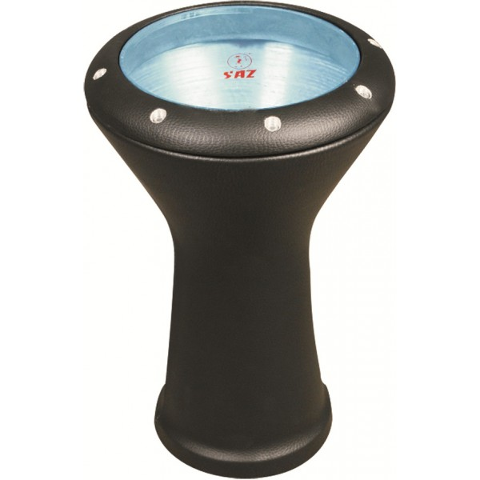
To realize it, first of all I started drawing it in rhino developing circumference along a curve.
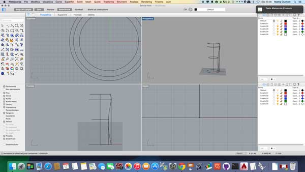
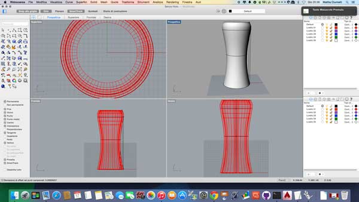
Once built the structure in 3d Rhino, I exported as STL and then I imported 123DMake. Here, using the option "radial slice", the program processes a structure consisting of circular sections that fit together in cross sections.
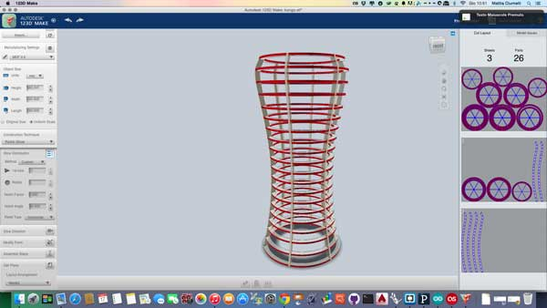
Once you enter the dimensions of the material to be used, the program allows you to export the DXF of the pieces created.
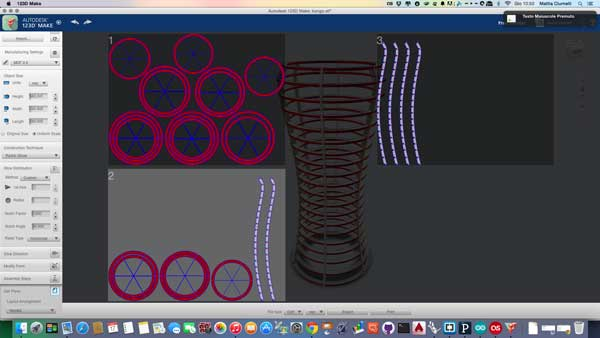
then i exported the file, I imported in rhino and prepared to be used with laser cutting
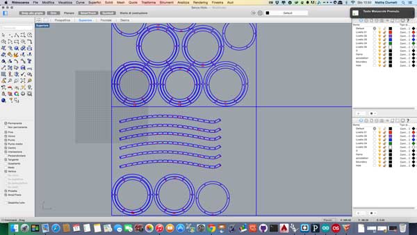
I cut the pieces on MDF 5mm thick, and once clean got ready to assemble the structure.
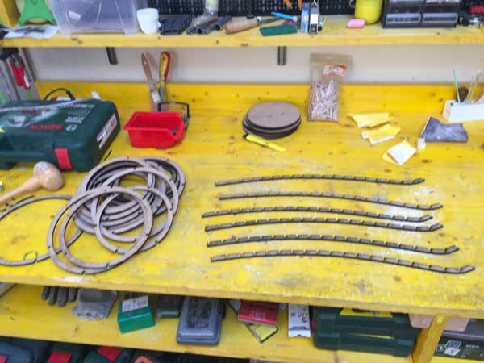
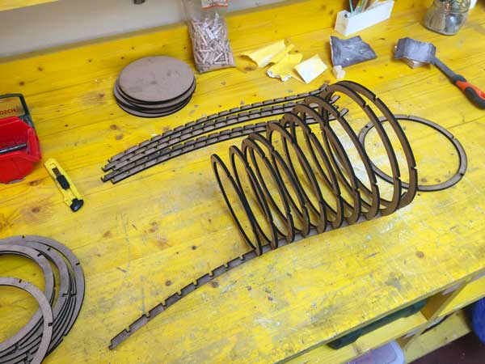
to facilitate assembly have blocked some joints using twine
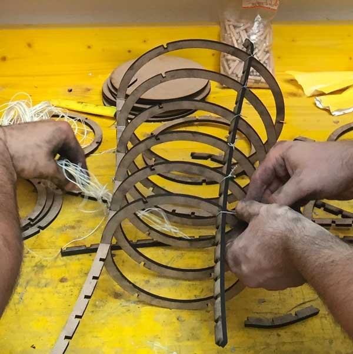
This is the result when assembled all the pieces
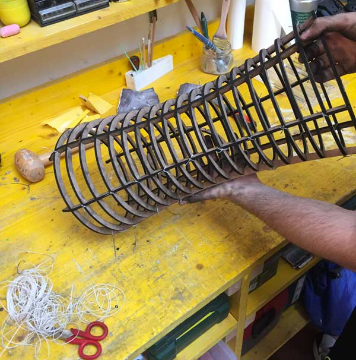
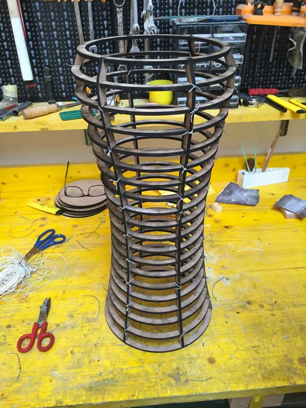
Once mounted, I puts it in a stocking for women, in order to create a uniform surface on which then apply the strips of material and resin.
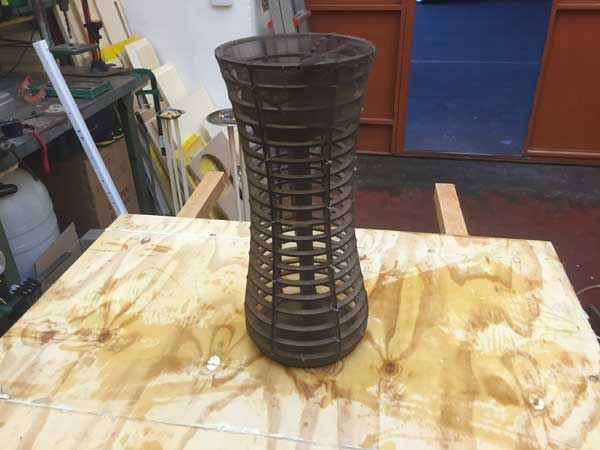
after which I made some strips of sturdy fabric (very similar to the felt)
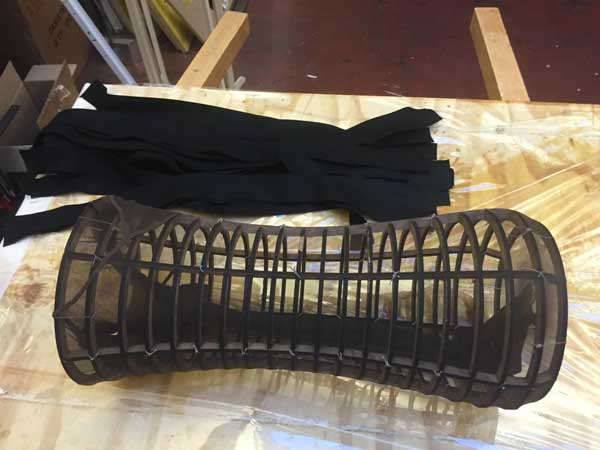
and, using the epoxy, I have applied to the structure, by obtaining a fair result in the end
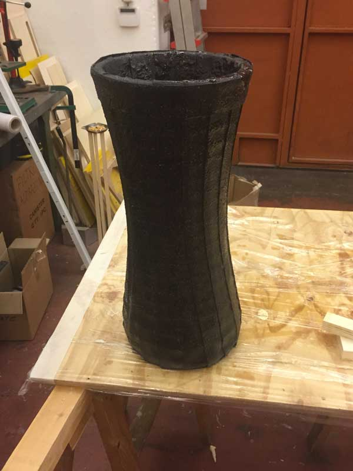
after 24 hours, this is the result I got
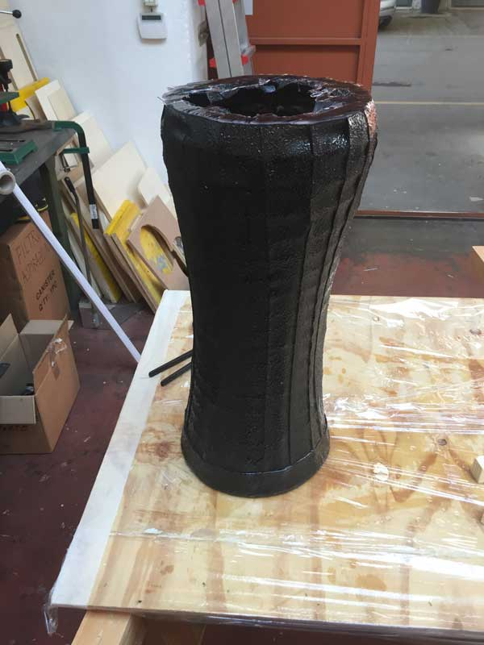
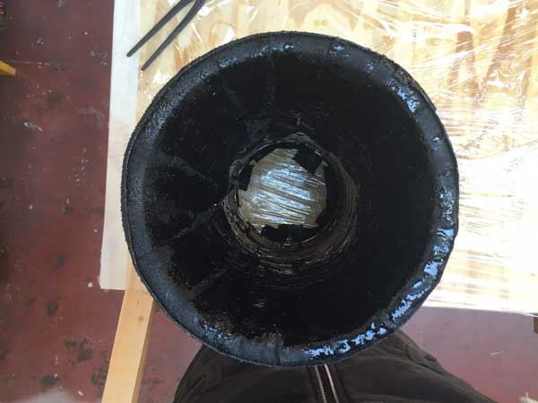
Once the surface clean by the imperfections created by the resin with sandpaper, I applicatato at the base of the rope jute, always using the resin, as embellishment for the structure. This is the final result:
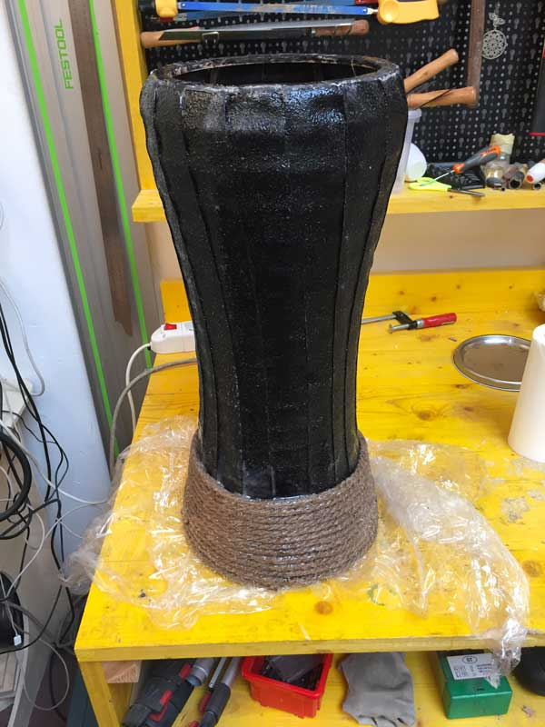
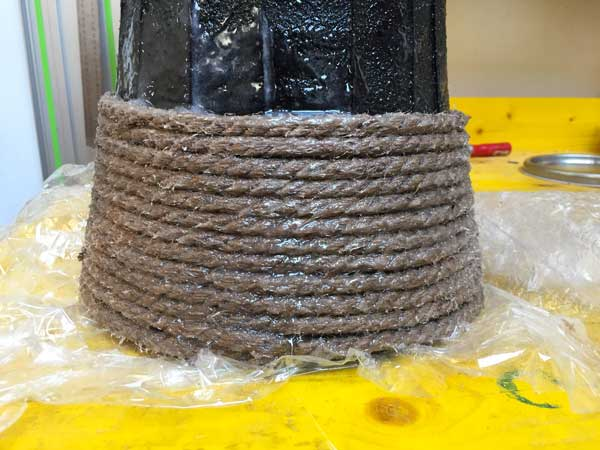
Now I just have to find a membrane to be applied, and the darbuka is complete!